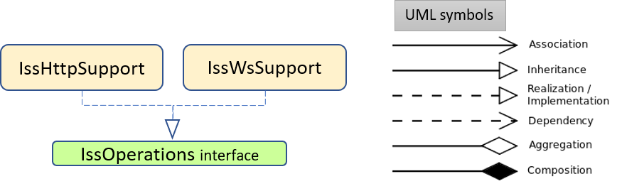

Introduction
This case-study starts to deal with the design and development of proactive/reactive software systems that use aynchronous exchange of information.
Requirements
Design and build a software system that allow the robot described in VirtualRobot2021.html
to exibit the following behaviour:
- the robot lives in a closed environment, delimited by walls that includes one or more devices (e.g. sonar) able to detect its presence;
-
the robot has a
den for refuge, located near a wall; -
the robot works as an explorer of the environment. Starting from its
den , the robot moves (either randomly or - preferably - in a more organized way) with the aim to find the fixed obstacles around theden . The presence of mobile obstacles is (at the moment) excluded; -
since the robot is 'cautious', it returns immediately to the
den as soon as it finds an obstacle. Optionally, it should also return to the den when a sonar detects its presence; - the robot should remember the position of the obstacles found, by creating a sort of 'mental map' of the environment.
Requirement analysis
A closer confrontation with the custum has clarified that the customer intends:
NOUNS
NOUNS
- "
robot ": a device able to execute move commands sent over the network, as described in the document VirtualRobot2021.html provided by the customer; - "
closed environment ": a conventional (rectangular) room of an house, delimited bywalls ; - "
sonar ": external device that is included in the boundary of the room that aquires information about the robot's position inside the room.Optionally the robot will have to return to its den if it detects its presence. This constitutes thereactive part of our sistem because it reacts to the robot's presence; - "
den ": fixed starting position inside the room near awall where the robot will be located before the software starts. The costumer initialized theden in the up left corner, facing South; - "
obstacles ":general objects or evenwalls around or inside the boundary of the room. The obstacles can be fixed or mobile; - "
mental map ": an abstract representation of the room where the robot is and the obstacles inside. The robotshould remember it;
- "
walk ": the robot moves freely in any direction. Its path can be random or (preferably ) organized. This constitutes also thepro-active part of pur system; - "
finds ": the robot finds an obstacle when the robot collides with it - "
should remember ": it is important that the robot is able to remember the map;
- "
optionally ": the costumer will pay more or will choose more likely this solution if we add the optional feature;
The costumer request an analysis (requirements and problems) and a first project for Marth 16th 2021 .
User stories
User story 1The robot is located in his startingUser story 2The robot optionally will have to return to its den if the sonar detects it. |
|
| When the application terminates, the itinerary done by the robot must be that shown in the figure and a proper |
Problem analysis
We highlight that:
- In the VirtualRobot2021.html: commands the customer states that the robot can receive move commands in two different ways:
- by sending messages to the port 8090 using
HTTP POST - by sending messages to the port 8091 using a
websocket
- by sending messages to the port 8090 using
- With respect to the technological level, there are many libraries in many programming languages that support the required protocols.
- However, the problem does introduce an abstraction gap at the conceptual level, since the required logical interaction is always a
request-response , regardless of the technology used to implement the interaction with the robot.
- However, the problem does introduce an abstraction gap at the conceptual level, since the required logical interaction is always a
- It the case that a sonar is implemented a approch with websocket will be more efficient, because otherwise, if we use HTTP, we should do polling to acquire informations from it.
- Two types of control language are made availlable from the costumer: the
cril and thearil ;- cril: we need to specify the time lenght of the command when we want to send a message;
- aril: the time lenght of the command is fixed;
- The aril language is prefered at test time because we can already know the desired results. For the same reason a controlled way of moving the robot is prefered.
- The return to the den also can be implemented in different ways:
- Can take the same path but backwards;
- Can choose a path never taken before;
- Can take the longest path;
- Can take the shortest path;
Logical architecture
We nust design and build a distributed system with two software macro-components:
|
It is observed that:
- To make out software application as much as possible independent from the undelying communication protocols,
the designer could make references to proper design patterns such as
Adapter ,Factory ,Builder , ext. - It is quite easy to define what the robot has to do to meet the requirements.
We can define a set of availlable movement directions for the robot (Down, Up, Left, Right).
Then the robot is located to is
den facing the South direction. Until the robot doesn't encounter an obstacle or the sonar detects its presence and check his behavior on its way back to the den;
Test plans
To check if the application fulfills the requirements, we could keep track of every moves done by the robot. Once a collision is detected or the sonar detects the robot's presence we can:
FIRST we check if we are not already in the starting position. Then:
For instance:
Test 1
Map backwards the moves into their oppositesFor instance:
- Let's define a
String moves=""; - Every time the robot moves we append the symbol corresponding to the direction taken (e.g. after the command
moveForward we append a"w" and if a command moveLeft is sent after, we append a"l" . At the endmoves will look like"wl" ) ; - After a collision or an interruption (by sonar or user) is detected, we map
moves to its oppositString movesOpos="rb" (we map backwards so"wl" becomes"lw" and we substitute each movement with its opositel -> r (right) ,w -> b (back) ); - Then we clear
moves and we repeat the point number 2; - At the end we compare the new value of
moves withmovesOpos ;
Test 2
We make the robot face always the direction he is taking. In this case we map all the back command with a double turn right or left (indiscriminately) followed by a forward, so that the robot will face the direction it will take. Only if the last move is backword we just substitute it with a forward command. Also we map the turn into their oposite, so all the left will become right and the right left. At the and we add two or one turn left or right based on which direction we are facing when we get to the den.Test 3
We can also calculate a best bath using a shortest path algorithm or a longest path algoritm. In this case we look for the closest or longest way to reach our destination. The written test woulb the implementation of the search path algorithm.Project
Nature of the application component
|
Our application " |
Communication's abstraction layer
|
It is noticed from the technological detail from VirtualRobot2021.html that we have two different technologies for communicating with the robot.
This gap can be resolved by adding an abstraction level creating a layered architecture, which is the simplest form of software architecture.
A pattern usefull to fulfill the gap is the pattern Facade which allows the programmers to work through an object to minimize the dependencies on a subsistem (in our case the communication).
So we will have an interface containing the basic method such as |
 |
|
It is possible to add another abstraction layer on the creation of the object that will handle the communication. We can use the pattern Factory embadded in a class that will
initialize the protocol that will be used. The class IssCommsSupportFactory.java from |

|
Workflow - Priority list
We define a list of priority for the fulfillment of requirements. The smallest the list index the higher the priority:
- Create a stable and efficient communication system that can handle both HTTP and websocket. Otherwise if we are not apble to communicate with the robot there is no point of doing everything else;
- Add to the communication system the message format (cril, aril). A great solution would to make the user able of using both languages;
- Make the robot move in organized way and randomly;
- Make the robot go back to the den once it finds an obstacle; For semplicity at the beginning the robot can take just the path backwards
- Use the information received from the robot to create the mental map;
- Use the sonar information to make the robot go back to the den when detected;